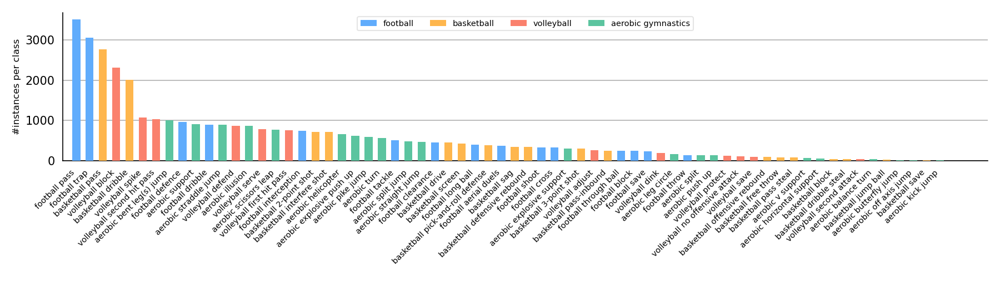
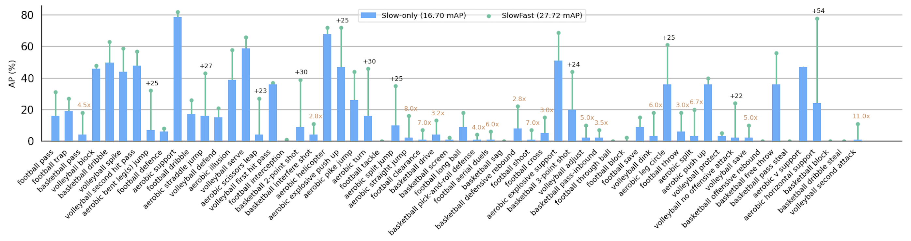

MultiSports: A Multi-Person Video Dataset of Spatio-Temporally Localized Sports Actions
MCG Group @ Nanjing University
The 25fps tubelets of bounding boxes and fine-grained action category annotations in the sample frames of MultiSports dataset. Multiple concurrent action situations frequently appear in MultiSports with many starting and ending points in the long untrimmed video clips. The frames are cropped and sampled by stride 5 or 7 for visualization propose. Tubes with the same color represent the same person.
Abstract
Spatio-temporal action localization is an important and challenging problem in video understanding. The existing action detection benchmarks are limited in aspects of small numbers of instances in a trimmed video or low-level atomic actions. This paper aims to present a new multi-person dataset of spatio-temporal localized sports actions, coined as MultiSports. We first analyze the important ingredients of constructing a realistic and challenging dataset for spatio-temporal action localization by proposing three criteria: (1) motion dependent identification, (2) with well-defined boundaries, (3) high-level classes with relative complexity. Based on these guidelines, we build the dataset of MultiSports v1.0 by selecting 4 sports classes, collecting around 3200 video clips, and annotating around 37790 action instances with 907k bounding boxes. Our datasets are characterized with important properties of high diversity, detailed annotation, and high quality. Our MultiSports, with its realistic setting and dense annotations, exposes the intrinsic challenge of action localization. To benchmark this, we adapt several representative methods to our dataset and give an in-depth analysis on the difficulty of action localization in our dataset. We hope our MultiSports can serve as a standard benchmark for spatio-temporal action localization in the future.
Demo Video
WILL BE UPDATED LATER
Hierarchy of Action Category
The action vocabulary hierarchy and annotator interface of the MultiSports dataset. Our MultiSports has a two-level hierarchy of action vocabularies, where the actions of each sport are fine-grained.
Dataset Statitics
Our MultiSports contains 66 fine-grained action categories from four different sports, selected from 247 competition records. The records are manually cut into 800 clips per sport to keep the balance of data size between sports, where we discard intervals with only background scenes, such as award, and select the highlights of competitions as video clips for action localization.
Overall comparison of statistics between existing action localization datasets and our MultiSports v1.0. (* only train and val sets' ground-truths are available, † number of person tracklets, each of which has one or more action labels, ‡ 1fps action annotations have no clear action boundaries)
Statistics of each action class's data size in MultiSports sorted by descending order with 4 colors indicating 4 different sports. For actions in the different sports sharing the same name, we add the name of sports after them. The natural long-tailed distribution of action categories raises new challenges for action localization models. 
Statistics of action instance duration in MultiSports, where the x-axis is the number of frames and we count all instances longer than 95 frames in the last bar. Our action instances have a large variance in duration, resulting in challenges in modeling varying temporal structures.
Experiment Results
-
Comparison of SOTA methods

- Comparison between SlowFast and SlowOnly 
Download
WILL BE UPDATED LATER